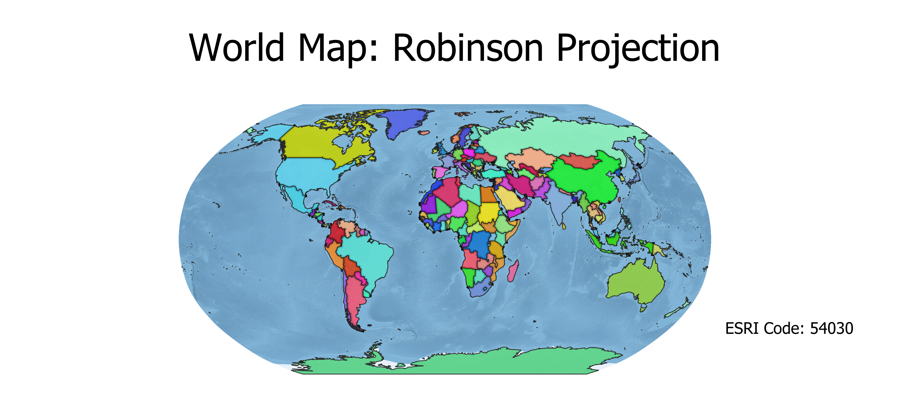

For this homework, I first downloaded data from the Natural Earth datasets, in particular the 1:50 raster with water, as well as the country and land boundary lines. After some adjustments to have all the countries be different colors using the layer styling tool to set the color ramp to random colors with the value being SOVEREIGNT, I simply adjusted the projections using CRS, and selecting for the ones that automatically adjusted.

This specific Mercator projection uses the WGS 84, the World Geodetic System 1984, used in the GPS. Also known as the Web Mercator, is the standard projection for online maps. It is a Mercator variant, and as such has similar virtues and flaws--it conserves the linear scale, and as such the angles and shapes, it distorts the size of objects, increasing in severity as latitude increases from equator to poles. What separates it from other Mercator variants is that it's a mix of both spherical and ellipsoid variants, which is easier to handle for small-scale maps such as the world, and also simpler to calculate. Notably, its negative values are low--with -180 being the peak for x and -90 for the Y.

The Behrmann projection is a cylindrical map projection, differing from the other cylindrical equal-area projection by having its two standard parallels at 30 degrees North and 30 degrees South, between the two there is no distortion. While area is conserved, as it is an equal-area projection, many things are distorted in increasing intensity the further things are from the two parallels, including shape, direction, angle, and distance.
The Robinson Projection is a compromise map that attempts to show the entire world at once as a flat image. Neither equivalent nor conformal, distortion close to the poles is high due to the meridians being curved gently, but decreases the closer to the equator one goes. Nothing is conserved with this projeciton, distorting shapes, areas, distances, directions, and angles, but while it does change longitudinally distortion is maintained in latitude. It's essentially a good attempt at showing the entire world at once, adhering to no one particular type to try to make the best of both worlds.

A generalized version of the azimuthal equidistant projection, the Two-Point Equidistant projection has two locus points, distance which the two points to any other part of the map being correct. As an azimuthal projection, it preserves distance and direction, but it heavily distorts shapes. It's generally been used to map continents like Asia, where shape is not extraordinarily important in comparison to distance and direction.

A cylindrical projection, the Gall Stereographic projection is another compromise projeciton that seeks to neither preserve area or angles, attempting to keep the balance of distortion between both. Its standard parallels are 45 degrees north and south. Although it distorts shape, areas, distances, directions, and angles in general, it has the right scale and there si no distortion alongside the standard parallels, increasing away from them and maximizing at the poles. It's used for more general world maps that don't need fully accurate areas.

Another compromise cylindrical projection, the Patterson projection attempts to lessen exaggerated distortion at high latitude areas, such as near the poles. It preserves nothing, with distortion near minimal at the equator, but as with other compromise cylindrical projection, increases towards the poles.

A pseudocylindrical equal-area projection, the sinusoidal projection it represents the poles as points, but heavily distorts the meridians and continents. The equator and prime meridian have no distortion, but the further from those lines one is, the greater the distortion, which includes shape, direction, angle, and distance, but scale remains true along every parallel and the central meridian. Although not generally recommended for use, it's usable for thematic world maps and for equatorial continents, which can have their own central meridians.

The Wagner V projection is another compromise pseudocylindrical map, thus not preserving shapes, areas, distances, directions, and angles. It's a fairly generic projection, with no essentially special quality rather than attempting to have a low-distortion appearance, thus being usable for general world maps.

Another compromise map, the Van der Grinten projection is neither conformal nor equal area. Although distortiong shapes, areas, distances, directions, and angles, it is a polyconic projection, aiming to be circular, having the equator and central meridian appearing to be of equal length. Therefore, it generally preserves shapes akin to a Mercator projection, while attempting to reduce the Mercator's distortion, Naturally, however, polar regions are heavily distorted. It is highly used for global maps that don't require accurate areas,.
I'm hosted with GitHub Pages.

This projection, as a cylindrical one, presents the world as a rectangle, an unrolled cylinder. As noted in the title, it preserves the area, while distorting the distance, direction, shape, so on and so forth. It's used largely for large-scale mapping of areas near the equator, with high distortion the further from the equator the location is. The latitude lines are decreasing in spacing the further one is from the equator. Shapes are also distorted further between the standard parallels North-South.

This projection is akin to a circle with a little less than half cut out, hence the name of "conic." It preserves distance along all the meridians and the two standard parallels, distoring shape, area, distance, direction, and angles. No distortion is present along the standard paralle,s growing the further the location is from the parallels. It's generally used for landmasses extending from east to west at middling latitudes, when all other except from shape does not need to be heavily considered, such as Russia.

This projection centers around the North Pole, with everything else depicted as stretching from that point. Thus, all distance is preserved from that point, as well as direction. However, scale is only true along the straight lines, such as meridians, stretching from that point. Otherwise, all else is distorted. growing further from the centerpoint, in this case being the North Pole. Thus, it's highly useful to displaying a hemisphere, especially the cloest to the poles, in this case like sea charts in the Arctic.

This map is a compromise pseudo-cylindrical projection, attempting to average out coordinates of sinusoidal as well as a cylindrical projection. Thus, there is high bulging along the east and west edges of the map alongside the equator. Neither conformal nor equal-area, it distorts everything, with high-latitude areas very distorted and the bulging meridians also significantly distorted. It seems usable for world maps, but not especially so.

The main difference between EPSG 4326 and this map, EPSG 3587, is that the former uses the coordinate system the same as a globe, the curved surface, while 3587 uses the one as a map, a flat surface, or rather the coordintates projected from the globe onto the map. Otherwise, the same principles remain, except that the negative values on this one is not as limited as 4326's. Also notable is the considerably larger Antarctica and Greenland.

The World Aitoff projection is a modified azimuthal projection, a compromise one that's more elliptic. Developed by the titular Russian cartographer David A. Aitoff, it aims to have equally spaced meridians concave towards the centrail meridian, which is straight up and down between the poles. Neither conformal nor equivalent, shapes, areas, distance,s directions, and angles are somewhat distorted, but scale remains consistent along the equator and central meridian. It's appropriate for smaller-scale mapping, so long as area does not need to be accurate.